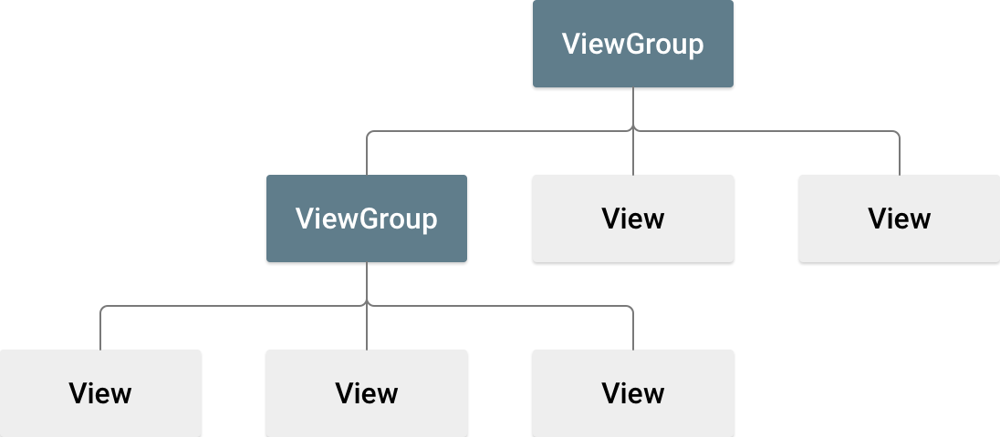
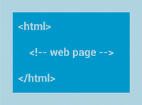

A layout defines the structure for a user interface in your app, such as in
an
activity. All elements in the
layout are built using a hierarchy of
View and
ViewGroup
objects. A View usually draws something the user can see and
interact with. A ViewGroup is an invisible container that defines
the layout structure for View and other ViewGroup
objects, as shown in figure 1.

View objects are often called widgets and can be one of
many subclasses, such as
Button or
TextView. The
ViewGroup objects are usually called layouts and can be one
of many types that provide a different layout structure, such as
LinearLayout
or
ConstraintLayout.
You can declare a layout in two ways:
- Declare UI elements in XML. Android provides a straightforward XML
vocabulary that corresponds to the
Viewclasses and subclasses, such as those for widgets and layouts. You can also use Android Studio's Layout Editor to build your XML layout using a drag-and-drop interface. - Instantiate layout elements at runtime. Your app can create
ViewandViewGroupobjects and manipulate their properties programmatically.
Declaring your UI in XML lets you separate the presentation of your app from the code that controls its behavior. Using XML files also makes it easier to provide different layouts for different screen sizes and orientations. This is discussed further in Support different screen sizes.
The Android framework gives you the flexibility to use either or both of these methods to build your app's UI. For example, you can declare your app's default layouts in XML, and then modify the layout at runtime.
Write the XML
Using Android's XML vocabulary, you can quickly design UI layouts and the screen elements they contain, in the same way that you create web pages in HTML with a series of nested elements.
Each layout file must contain exactly one root element, which must be a
View or ViewGroup object. After you define the root
element, you can add additional layout objects or widgets as child elements to
gradually build a View hierarchy that defines your layout. For
example, here's an XML layout that uses a vertical LinearLayout to
hold a TextView and a Button:
<?xml version="1.0" encoding="utf-8"?>
<LinearLayout xmlns:android="http://schemas.android.com/apk/res/android"
android:layout_width="match_parent"
android:layout_height="match_parent"
android:orientation="vertical" >
<TextView android:id="@+id/text"
android:layout_width="wrap_content"
android:layout_height="wrap_content"
android:text="Hello, I am a TextView" />
<Button android:id="@+id/button"
android:layout_width="wrap_content"
android:layout_height="wrap_content"
android:text="Hello, I am a Button" />
</LinearLayout>After you declare your layout in XML, save the file with the
.xml extension in your Android project's res/layout/
directory so it properly compiles.
For more information about the syntax for a layout XML file, see Layout resource.
Load the XML resource
When you compile your app, each XML layout file is compiled into a
View resource. Load the layout resource in your app's
Activity.onCreate()
callback implementation. Do so by calling
setContentView(),
passing it the reference to your layout resource in the form:
R.layout.layout_file_name. For example, if your XML
layout is saved as main_layout.xml, load it for your
Activity as follows:
Kotlin
fun onCreate(savedInstanceState: Bundle) {
super.onCreate(savedInstanceState)
setContentView(R.layout.main_layout)
}Java
public void onCreate(Bundle savedInstanceState) {
super.onCreate(savedInstanceState);
setContentView(R.layout.main_layout);
}The Android framework calls the onCreate() callback method in
your Activity when the Activity launches. For more
information about activity lifecycles, see
Introduction to
activities.
Attributes
Every View and ViewGroup object supports its own
variety of XML attributes. Some attributes are specific to a View
object. For example, TextView supports the textSize
attribute. However, these attributes are also inherited by any View
objects that extend this class. Some are common to all View
objects, because they are inherited from the root View class, like
the id attribute. Other attributes are considered layout
parameters, which are attributes that describe certain layout orientations
of the View object, as defined by that object's parent
ViewGroup object.
ID
Any View object can have an integer ID associated with it to
uniquely identify the View within the tree. When the app is
compiled, this ID is referenced as an integer, but the ID is typically assigned
in the layout XML file as a string in the id attribute. This is an
XML attribute common to all View objects, and it is defined by the
View class. You use it very often. The syntax for an ID inside an
XML tag is the following:
android:id="@+id/my_button"The at symbol (@) at the beginning of the string indicates that
the XML parser parses and expands the rest of the ID string and identifies it as
an ID resource. The plus symbol (+) means this is a new resource name
that must be created and added to your resources in the R.java
file.
The Android framework offers many other ID resources. When referencing an
Android resource ID, you don't need the plus symbol, but you must add the
android package namespace as follows:
android:id="@android:id/empty"The android package namespace indicates that you're referencing
an ID from the android.R resources class, rather than the local
resources class.
To create views and reference them from your app, you can use a common pattern as follows:
- Define a view in the layout file and assign it a unique ID, as in the
following example:
<Button android:id="@+id/my_button" android:layout_width="wrap_content" android:layout_height="wrap_content" android:text="@string/my_button_text"/> - Create an instance of the view object and capture it from the layout,
typically in the
onCreate()method, as shown in the following example:Kotlin
val myButton: Button = findViewById(R.id.my_button)Java
Button myButton = (Button) findViewById(R.id.my_button);
Defining IDs for view objects is important when creating a
RelativeLayout.
In a relative layout, sibling views can define their layout relative to another
sibling view, which is referenced by the unique ID.
An ID doesn't need to be unique throughout the entire tree, but it must be unique within the part of the tree you search. It might often be the entire tree, so it's best to make it unique when possible.
Layout parameters
XML layout attributes named layout_something define
layout parameters for the View that are appropriate for the
ViewGroup it resides in.
Every ViewGroup class implements a nested class that extends
ViewGroup.LayoutParams.
This subclass contains property types that define the size and position of each
child view, as appropriate for the view group. As shown in figure 2, the parent
view group defines layout parameters for each child view, including the child
view group.

Every LayoutParams subclass has its own syntax for setting
values. Each child element must define a LayoutParams that is
appropriate for its parent, though it might also define a different
LayoutParams for its own children.
All view groups include a width and height, using layout_width
and layout_height, and each view is required to define them. Many
LayoutParams include optional margins and borders.
You can specify width and height with exact measurements, but you might not want to do this often. More often, you use one of these constants to set the width or height:
wrap_content: tells your view to size itself to the dimensions required by its content.match_parent: tells your view to become as big as its parent view group allows.
In general, we don't recommend specifying a layout width and height using
absolute units such as pixels. A better approach is using relative measurements,
such as density-independent pixel units (dp), wrap_content, or
match_parent, because it helps your app display properly across a
variety of device screen sizes. The accepted measurement types are defined in
Layout resource.
Layout position
A view has rectangular geometry. It has a location, expressed as a pair of left and top coordinates, and two dimensions, expressed as a width and height. The unit for location and dimensions is the pixel.
You can retrieve the location of a view by invoking the methods
getLeft()
and
getTop().
The former returns the left (x) coordinate of the rectangle representing
the view. The latter returns the top (y) coordinate of the rectangle
representing the view. These methods return the location of the view relative to
its parent. For example, when getLeft() returns 20, this means the
view is located 20 pixels to the right of the left edge of its direct
parent.
In addition, there are convenience methods to avoid unnecessary computations:
namely
getRight()
and
getBottom().
These methods return the coordinates of the right and bottom edges of the
rectangle representing the view. For example, calling getRight() is
similar to the following computation: getLeft() + getWidth().
Size, padding, and margins
The size of a view is expressed with a width and height. A view has two pairs of width and height values.
The first pair is known as measured width and
measured height. These dimensions define how big a view wants to be
within its parent. You can obtain the measured dimensions by calling
getMeasuredWidth()
and
getMeasuredHeight().
The second pair is known as width and height, or sometimes
drawing width and drawing height. These dimensions define the
actual size of the view on screen, at drawing time and after layout. These
values might, but don't have to, differ from the measured width and height. You
can obtain the width and height by calling
getWidth()
and
getHeight().
To measure its dimensions, a view takes into account its padding. The padding
is expressed in pixels for the left, top, right and bottom parts of the view.
You can use padding to offset the content of the view by a specific number of
pixels. For instance, a left padding of two pushes the view's content two pixels
to the right of the left edge. You can set padding using the
setPadding(int, int, int, int)
method and query it by calling
getPaddingLeft(),
getPaddingTop(),
getPaddingRight(),
and
getPaddingBottom().
Although a view can define a padding, it doesn't support margins. However,
view groups do support margins. See
ViewGroup and
ViewGroup.MarginLayoutParams
for more information.
For more information about dimensions, see Dimension.
Besides setting margins and padding programmatically, you can also set them in your XML layouts, as shown in the following example:
<?xml version="1.0" encoding="utf-8"?>
<LinearLayout xmlns:android="http://schemas.android.com/apk/res/android"
android:layout_width="match_parent"
android:layout_height="match_parent"
android:orientation="vertical" >
<TextView android:id="@+id/text"
android:layout_width="wrap_content"
android:layout_height="wrap_content"
android:layout_margin="16dp"
android:padding="8dp"
android:text="Hello, I am a TextView" />
<Button android:id="@+id/button"
android:layout_width="wrap_content"
android:layout_height="wrap_content"
android:layout_marginTop="16dp"
android:paddingBottom="4dp"
android:paddingEnd="8dp"
android:paddingStart="8dp"
android:paddingTop="4dp"
android:text="Hello, I am a Button" />
</LinearLayout>
The preceding example shows margin and padding being applied. The
TextView has uniform margins and padding applied all around, and
the Button shows how you can apply them independently to different
edges.
Common layouts
Each subclass of the ViewGroup class provides a unique way to
display the views you nest within it. The most flexible layout type, and the one
that provides the best tools for keeping your layout hierarchy shallow, is
ConstraintLayout.
The following are some of the common layout types built into the Android platform.
Organizes its children into a single horizontal or vertical row and creates a scrollbar if the length of the window exceeds the length of the screen.

Displays web pages.
Build dynamic lists
When the content for your layout is dynamic or not pre-determined, you can
use
RecyclerView or
a subclass of
AdapterView.
RecyclerView is generally the better option, because it uses memory
more efficiently than AdapterView.
Common layouts possible with RecyclerView and
AdapterView include the following:
Displays a scrolling single column list.
Displays a scrolling grid of columns and rows.
RecyclerView offers more possibilities and
the option to
create a custom
layout manager.
Fill an adapter view with data
You can populate an
AdapterView
such as ListView
or
GridView by
binding the AdapterView instance to an
Adapter,
which retrieves data from an external source and creates a View
that represents each data entry.
Android provides several subclasses of Adapter that are useful
for retrieving different kinds of data and building views for an
AdapterView. The two most common adapters are:
ArrayAdapter- Use this adapter when your data source is an array. By default,
ArrayAdaptercreates a view for each array item by callingtoString()on each item and placing the contents in aTextView.For example, if you have an array of strings you want to display in a
ListView, initialize a newArrayAdapterusing a constructor to specify the layout for each string and the string array:Kotlin
val adapter = ArrayAdapter<String>(this, android.R.layout.simple_list_item_1, myStringArray)Java
ArrayAdapter<String> adapter = new ArrayAdapter<String>(this, android.R.layout.simple_list_item_1, myStringArray);The arguments for this constructor are the following:
- Your app
Context - The layout that contains a
TextViewfor each string in the array - The string array
Then call
setAdapter()on yourListView:Kotlin
val listView: ListView = findViewById(R.id.listview) listView.adapter = adapterJava
ListView listView = (ListView) findViewById(R.id.listview); listView.setAdapter(adapter);To customize the appearance of each item you can override the
toString()method for the objects in your array. Or, to create a view for each item that's something other than aTextView—for example, if you want anImageViewfor each array item—extend theArrayAdapterclass and overridegetView()to return the type of view you want for each item. - Your app
SimpleCursorAdapter- Use this adapter when your data comes from a
Cursor. When usingSimpleCursorAdapter, specify a layout to use for each row in theCursorand which columns in theCursoryou want inserted into the views of the layout you want. For example, if you want to create a list of people's names and phone numbers, you can perform a query that returns aCursorcontaining a row for each person and columns for the names and numbers. You then create a string array specifying which columns from theCursoryou want in the layout for each result and an integer array specifying the corresponding views that each column need to be placed:Kotlin
val fromColumns = arrayOf(ContactsContract.Data.DISPLAY_NAME, ContactsContract.CommonDataKinds.Phone.NUMBER) val toViews = intArrayOf(R.id.display_name, R.id.phone_number)Java
String[] fromColumns = {ContactsContract.Data.DISPLAY_NAME, ContactsContract.CommonDataKinds.Phone.NUMBER}; int[] toViews = {R.id.display_name, R.id.phone_number};When you instantiate the
SimpleCursorAdapter, pass the layout to use for each result, theCursorcontaining the results, and these two arrays:Kotlin
val adapter = SimpleCursorAdapter(this, R.layout.person_name_and_number, cursor, fromColumns, toViews, 0) val listView = getListView() listView.adapter = adapterJava
SimpleCursorAdapter adapter = new SimpleCursorAdapter(this, R.layout.person_name_and_number, cursor, fromColumns, toViews, 0); ListView listView = getListView(); listView.setAdapter(adapter);The
SimpleCursorAdapterthen creates a view for each row in theCursorusing the provided layout by inserting eachfromColumnsitem into the correspondingtoViewsview.
If during the course of your app's life you change the underlying data that
is read by your adapter, call
notifyDataSetChanged().
This notifies the attached view that the data has been changed and it refreshes
itself.
Handle click events
You can respond to click events on each item in an AdapterView
by implementing the
AdapterView.OnItemClickListener
interface. For example:
Kotlin
listView.onItemClickListener = AdapterView.OnItemClickListener { parent, view, position, id ->
// Do something in response to the click.
}Java
// Create a message handling object as an anonymous class.
private OnItemClickListener messageClickedHandler = new OnItemClickListener() {
public void onItemClick(AdapterView parent, View v, int position, long id) {
// Do something in response to the click.
}
};
listView.setOnItemClickListener(messageClickedHandler);Additional resources
See how layouts are used in the Sunflower demo app on GitHub.